വൈദ്യയുതിയുടെ ലോോകം
അയ്യയോ!
കറന്റ് പോോയി. ഒന്നും
കാണുന്നില്ലല്ലലോ.
അവിടെ
എമർജൻസി ലാമ്പ് ഉണ്ടല്ലലോ.
അത് ഓൺ ചെയ്താൽ
പോോരേ മുത്തച്ഛാ.
വീട്ടിലെ ഒരു സന്ദർഭമാണ് മുകളിൽ സൂചിപ്പിച്ചിരിക്കുന്നത്.
നമ്മുടെ വീട്ടിലും ഇത്തരം സന്ദർഭങ്ങൾ ഉണ്ടാവാറില്ലേ.
രാത്രി വൈദ്യയുതി ഇല്ലാതാവുമ്പപോൾ വെളിച്ചം ലഭിക്കാൻ
നാം സാധാരണയായി എന്താണ് ചെയ്യുന്നത്?
● മെഴുകുതിരി ഉപയോോഗിക്കുന്നു.
എന്റെ വീട്ടിൽ
എമർജൻസി ലാമ്പ്
ഉണ്ട്.
●
●
വൈദ്യയുതി ഇല്ലാതാകുമ്പപോൾ പലരും പല സംവിധാനങ്ങളാണ്
ഉപയോോഗിക്കുന്നതെന്ന് മനസ്സിലായില്ലേ. അത്തരമൊൊരു സംവിധാനമാ
ണ് എമർജൻസി ലാമ്പ്.
നിങ്ങളുടെ വീട്ടിൽ എമർജൻസി ലാമ്പ് ഉണ്ടടോ? നമുക്കകൊരു
എമർജൻസി ലാമ്പ് നിർമ്മിച്ചാലോോ?
43
എങ്ങനെ നിർമ്മിക്കും?
എമർജൻസി ലാമ്പ് ഉണ്ടാക്കാൻ എന്തെല്ലാം സാമഗ്രികൾ ആവശ്യമാണ്?
താഴെക്കകൊടുത്തിരിക്കുന്ന സൂചകങ്ങളുടെ അടിസ്ഥാനത്തിൽ ശാസ്ത്ര
പുസ്തകത്തിൽ എഴുതൂ.
●
●
●
●
എമർജൻസി ലാമ്പ് പ്രവർത്തിക്കാനാവശ്യമായ വൈദ്യയുതി എങ്ങനെ
ലഭിക്കും?
വെളിച്ചം ലഭിക്കാൻ ബൾബ് ആവശ്യമല്ലേ?
ഓരോോ ഭാഗവും എങ്ങനെ ബന്ധിപ്പിക്കും?
സ്റ്റാൻഡ് എങ്ങനെ ഉണ്ടാക്കും?
ഇത്തരം ചോോദ്യങ്ങൾ നിങ്ങൾക്കുമുണ്ടാകുമല്ലലോ. നിങ്ങളുടെ ആശയം ഗ്രൂപ്പിൽ ചർച്ചചെയ്ത്
അവതരിപ്പിക്കൂ.
വൈദ്യയുതിലഭ്യത
വൈദ്യയുതി ഒരു ഊർജരൂപമാണെന്ന് മനസിലാക്കിയിട്ടുണ്ടല്ലലോ. മറ്റ് പല ഊർജരൂപങ്ങളി
ലേക്കും എളുപ്പം മാറ്റാവുന്ന ഒരു ഊർജരൂപമാണ് വൈദ്യയുതി.
വൈദ്യയുതോോർജവുമായി ബന്ധപ്പെട്ട ചില കാര്യങ്ങൾ പരിശോോധിക്കാം.
വൈദ്യയുതി എവിടെനിന്നനൊക്കെയാണ് ലഭിക്കുന്നത്? ചില ഉപകരണങ്ങളുടെ ചിത്രങ്ങൾ
താഴെ നൽകിയിരിക്കുന്നു. അവ നിരീക്ഷിക്കൂ. ഇവ ഓരോോന്നും പ്രവർത്തിക്കാനാവശ്യ
മായ വൈദ്യയുതി എവിടെ നിന്നാണ് ലഭിക്കുന്നത്? ശാസ്ത്രപുസ്തകത്തിൽ എഴുതൂ.
44
Page 45
Figure fig_ch03_p045_01 (Page 45)
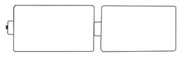
Figure fig_ch03_p045_02 (Page 45)
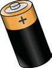
Figure fig_ch03_p045_03 (Page 45)
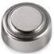
Figure fig_ch03_p045_04 (Page 45)
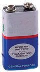
Figure fig_ch03_p045_05 (Page 45)
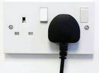
Figure fig_ch03_p045_06 (Page 45)
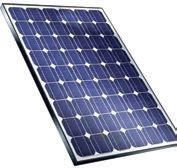
Figure fig_ch03_p045_07 (Page 45)
വൈദ്യയുതി നൽകുന്ന ചില സംവിധാനങ്ങളുടെ ചിത്രങ്ങളാണ് താഴെക്കകൊടുത്തിരിക്കുന്നത്.
നിത്യജീവിതത്തിൽ പലസന്ദർഭങ്ങളിലും ഇവ നാം ഉപയോോഗിക്കുന്നുണ്ടല്ലലോ. വൈദ്യയുതി
നൽകുന്ന ഇത്തരം സംവിധാനങ്ങളെക്കുറിച്ച് കൂടുതൽ മനസ്സിലാക്കാം.
വൈദ്യയുതസ്രരോതസ്സുകൾ (Sources of Electricity)
വൈദ്യയുതസെല്ലുകൾ, ജനറേറ്റർ, സോോളാർസെല്ലുകൾ തുടങ്ങി വൈദ്യയുതി നൽകു
ന്ന സംവിധാനങ്ങളാണ് വൈദ്യയുതസ്രരോതസ്സുകൾ.
രാസോോർജത്തെ വൈദ്യയുതോോർജമാക്കി മാറ്റാൻ കഴിയുന്ന സംവിധാനമാണ് വൈദ്യയുത
സെല്ലുകൾ എന്ന് നിങ്ങൾ പഠിച്ചിട്ടുണ്ടല്ലലോ. ഇവയിൽ വൈദ്യയുതോോർജം രാസോോർജമായി
സംഭരിച്ചിരിക്കുന്നു. നാം ഉപയോോഗിക്കുമ്പപോൾ രാസോോർജം വൈദ്യയുതോോർജമായി മാറുന്നു.
സെല്ലും ബാറ്ററിയും
സെൽ എന്നും ബാറ്ററി എന്നും കേട്ടിട്ടില്ലേ? എന്താണ് സെല്ലുകളും ബാറ്ററികളും തമ്മിലു
ള്ള വ്യത്യയാസം?
താഴെക്കകൊടുത്തിരിക്കുന്ന ചിത്രങ്ങൾ നിരീക്ഷിക്കൂ.
_
+
_
+
ചിത്രം 1
+
_
ചിത്രം 2
എന്താണ് ഇവ തമ്മിലുള്ള വ്യത്യയാസം?
ഒന്നിലധികം സെല്ലുകൾ ഗ്രൂപ്പായി ഘടിപ്പിച്ച് നിർമ്മിക്കുന്ന സംവിധാനമാണ് ബാറ്ററി.
മൂന്ന് രീതിയിൽ സെല്ലുകളെ ബന്ധിപ്പിച്ച ചിത്രങ്ങൾ (A, B, C) നൽകിയിരിക്കുന്നത് നി
രീക്ഷിക്കൂ. ഇവ മൂന്നും ബാറ്ററി ഉണ്ടാക്കുന്നതിനുള്ള ശരിയായ രീതിയാണോോ? ഏതാണ്
തെറ്റായ രീതി? ഏതിൽനിന്നാണ് കൂടുതൽ വൈദ്യയുതി ലഭിക്കുന്നത്?
45
C
താഴെക്കകൊടുത്തിരിക്കുന്ന ചിത്രങ്ങൾ നിരീക്ഷിക്കൂ.
ഈ രണ്ട് ഉപകരണങ്ങളിലും വൈദ്യയുതി ലഭിക്കുന്നത്
ഏത് സ്രരോതസ്സിൽനിന്നാണ്?
ഈ ഉപകരണങ്ങളിൽ ഉപയോോഗിക്കുന്ന വൈദ്യയുത
സ്രരോതസുകൾ തമ്മിൽ എന്താണ് വ്യത്യയാസം?
സെല്ലുകൾ - റീചാർജ് ചെയ്യാൻ കഴിയുന്നവയും കഴിയാത്തവയും
ക്ലലോക്കിൽ ഉപയോോഗിക്കുന്ന സെല്ലുകൾ പ്രവർത്തനരഹിതമായാൽ നിങ്ങൾ എന്തു
ചെയ്യും? എന്നാൽ മൊൊബൈൽ ഫോോണിലെ ചാർജ് തീർന്നാലോോ? ക്ലലോക്കിൽ സാധാരണ
യായി ഉപയോോഗിക്കുന്ന സെല്ലിലെ ചാർജ് തീർന്നാൽ ആ സെല്ല് ഉപയോോഗിക്കാൻ കഴിയി
ല്ല. എന്നാൽ മൊൊബൈൽ ഫോോണിലെ ബാറ്ററിയുടെ ചാർജ് കുറയുമ്പപോൾ അവ റീചാർജ്
ചെയ്ത് ഉപയോോഗിക്കാൻ കഴിയും.
റീചാർജ് ചെയ്യാൻ കഴിയുന്നവയും കഴിയാത്തവയുമായ സെല്ലുകൾ നിങ്ങളുടെ വീട്ടിലെ
വിവിധ ഉപകരണങ്ങളിൽ ഉപയോോഗിക്കുന്നുണ്ടല്ലലോ. അവ തരംതിരിച്ച് ശാസ്ത്രപുസ്തക
ത്തിൽ എഴുതൂ.
അധികവായനയ്ക്ക്
വൈദ്യയുതിയുടെ ലഘുചരിത്രം
വൈദ്യയുതി, പ്രകാശം, താപം, ശബ്ദം തുടങ്ങിയവ വിവിധ ഊർജരൂപങ്ങളാണ്. വള
രെയധികം ആവശ്യങ്ങൾക്ക് നാം ഉപയോോഗിക്കുന്ന ഊർജരൂപമാണ് വൈദ്യയുതി.
ഒരുതരം മരക്കറ ഉറച്ച് ഉണ്ടാവുന്ന ആംബർ എന്ന പദാർഥം കമ്പിളിയിൽ ഉരസു
മ്പപോൾ തലമുടിപോോലുള്ള വസ്തുക്കളെ ആകർഷിക്കുന്നുണ്ടെന്ന് പുരാതന ഗ്രീക്കു
കാർ മനസ്സിലാക്കിയിരുന്നു. തുടർന്ന് അനേകമാളുകൾ അനേകകാലം നടത്തിയ
പരീക്ഷണങ്ങളുടെ ഫലമായാണ് ഇന്ന് കാണുന്ന രീതിയിലുള്ള വൈദ്യയുത ഉൽപാദ
നവും അവയുടെ ഉപയോോഗവും സാധ്യമായത്.
ബാറ്ററി ഉപയോോഗിച്ച് ബൾബ് പ്രകാശിപ്പിക്കാം
വെളിച്ചം ലഭിക്കാൻ വൈദ്യയുതബൾബുകളാണല്ലലോ നാം
സാധാരണയായി ഉപയോോഗിക്കുന്നത്. പലതരം ബൾബു
കൾ ഉപയോോഗത്തിലുണ്ട്. ഈ ചിത്രം നോോക്കൂ. ഏത് ബൾ
ബുകളാണ് എമർജൻസി ലാമ്പിൽ ഉപയോോഗിച്ചിരിക്കു
ന്നത്?
എന്താണ് LED ഉപയോോഗിക്കുന്നതുകൊൊണ്ടുള്ള മേന്മകൾ?
LED (Light Emitting Diode) ഊർജലാഭത്തിന് ഗണ്യമായി സഹായിക്കുന്നു. സാധാരണ
ഇലക്ട്രിക് ബൾബുകളെക്കാൾ കുറഞ്ഞ ഊർജം മതി CFL ന്. സമീപകാലംവരെ CFL
വ്യയാപകമായി ഉപയോോഗിച്ചിരുന്നു. എന്നാൽ ഇന്ന് CFL സാധാരണയായി ഉപയോോഗിക്കു
ന്നില്ല. CFL നെക്കാൾ കുറഞ്ഞ ഊർജം മതി LED ബൾബുകൾക്ക്. പുതിയ തലമുറ LED
ഒന്നിലധികം LED ബൾബുകൾ ഒരു സ്ട്രരിപ്പിൽ ക്രമീ
കരിച്ച സംവിധാനമാണ് LED മൊൊഡ്യയൂൾ.
നിങ്ങളുടെ ശാസ്ത്രകിറ്റിൽ കണക്ടിങ് വയർ, LED
മൊൊഡ്യയൂൾ, 9 V ബാറ്ററി, കണക്ടർ എന്നിവയില്ലേ.
ഇവ ഉപയോോഗിച്ച് LED മൊൊഡ്യയൂൾ എങ്ങനെ പ്ര
കാശിപ്പിക്കാമെന്ന് പരീക്ഷിച്ചുനോോക്കൂ. പരീക്ഷണം
ഗ്രൂപ്പുകളായി ചെയ്ത് ക്ലാസിൽ അവതരിപ്പിക്കൂ. എല്ലാ
ഗ്രൂപ്പുകൾക്കും ബൾബ് പ്രകാശിപ്പിക്കാൻ സാധിച്ചചോ?
കണക്ട് ചെയ്ത രീതി ശാസ്ത്രപുസ്തകത്തിൽ വരയ്ക്കൂ.
LED ബൾബ് പ്രകാശിപ്പിച്ചില്ലേ. അതിനായി ഉപയോോഗിച്ച വൈദ്യയുതസ്രരോതസ്, ചാലക
ക്കമ്പി എന്നിവ ഏതെല്ലാമെന്ന് എഴുതൂ.
വൈദ്യയുതസെർക്കീട്ട് (Electric Circuit)
വൈദ്യയുതസ്രരോതസ്സിൽനിന്ന് ഉപകരണത്തിലേക്ക് വൈദ്യയുതി കടന്നുപോോവുന്നതിനു
ള്ള ക്രമീകരണമാണ് വൈദ്യയുതസെർക്കീട്ട്. ഒരു സെർക്കീട്ടിൽ ചുരുങ്ങിയത് വൈദ്യയുത
സ്രരോതസ്സ്, ചാലകക്കമ്പി, ഒരു വൈദ്യയുതോോപകരണം എന്നിവ ഉണ്ടായിരിക്കും.
47
ചുവടെ നൽകിയിരിക്കുന്ന ചിത്രങ്ങൾ ശ്രദ്ധിക്കൂ. ചില സെർക്കീട്ടുകളുടെ ഭാഗങ്ങളാണ്
ചിത്രത്തിൽ സൂചിപ്പിച്ചിരിക്കുന്നത്.
സെർക്കീട്ട് 1
സെർക്കീട്ട് 2
സെർക്കീട്ട് 3
ഈ സെർക്കീട്ടുകളിൽ ബൾബ് പ്രകാശിക്കുമോോ? എന്തുകൊൊണ്ട്? ചിത്രങ്ങൾ വിശകലനം
ചെയ്ത് ശാസ്ത്രപുസ്തകത്തിൽ രേഖപ്പെടുത്തൂ.
അടഞ്ഞ സെർക്കീട്ടും തുറന്ന സെർക്കീട്ടും (Closed Circuit and Open Circuit)
ഒരു സെർക്കീട്ട് പൂർത്തിയായിട്ടുണ്ടെങ്കിൽ അത് അടഞ്ഞ സെർക്കീട്ട് (Closed Circuit)
ആണ്. സെർക്കീട്ട് പൂർത്തിയായിട്ടില്ലെങ്കിൽ അത് തുറന്ന സെർക്കീട്ട് (Open Circuit)
ആണ്. അടഞ്ഞ സെർക്കീട്ടിൽ മാത്രമേ ഉപകരണങ്ങൾ പ്രവർത്തിക്കൂ.
ചുവടെ നൽകിയിരിക്കുന്ന സെർക്കീട്ടുകൾ അടഞ്ഞതാണോോ തുറന്നതാണോോ ?
എന്തുകൊൊണ്ട്? ചിത്രങ്ങൾ വിശകലനം ചെയ്ത് ശാസ്ത്രപുസ്തകത്തിൽ എഴുതൂ.
സെർക്കീട്ട് 1
സെർക്കീട്ട് 2
മുറിയിൽ ഇരിക്കുമ്പപോൾ നമുക്ക് ബൾബും ഫാനും പ്രവർത്തിപ്പിക്കേണ്ടിവരുമല്ലലോ.
അപ്പപോൾ ബൾബിലേക്കും ഫാനിലേക്കുമുള്ള സെർക്കീട്ടുകൾ അടഞ്ഞതാണോോ തുറന്ന
താണോോ വേണ്ടത്? നിങ്ങൾ മുറിയിൽനിന്ന് പുറത്ത് പോോകുമ്പപോൾ ബൾബും ഫാനും
ഓഫ് ചെയ്യാറില്ലേ. ആവശ്യമുള്ളപ്പപോഴൊൊക്കെ സെർക്കീട്ടുകൾ അടഞ്ഞതും തുറന്നതുമാ
ക്കി മാറ്റുന്നതെങ്ങനെ?
48
ചിത്രം നോോക്കൂ. ആവശ്യമുള്ളപ്പപോൾ ബൾബ് പ്രകാശി
പ്പിക്കാനും ഓഫാക്കാനും എന്തു മാർഗമാണ് ചിത്രത്തിൽ
കാണാൻ കഴിയുന്നത്?
ബൾബ്
സ്വവിച്ച്
സ്വിച്ച്
ആവശ്യമുള്ളപ്പപോൾ സെർക്കീട്ട് അടഞ്ഞതോോ തുറന്നതോോ
ആക്കി മാറ്റാനുള്ള ഉപകരണമാണ് സ്വവിച്ച്. സ്വവിച്ച് ഓൺ
ആക്കുമ്പപോൾ സെർക്കീട്ട് അടഞ്ഞതാകുന്നു. സ്വവിച്ച്
ഓഫാക്കുമ്പപോൾ സെർക്കീട്ട് തുറന്നതാകുന്നു.
ബാറ്ററി
നിങ്ങൾ തയ്യാറാക്കിയ സെർക്കീട്ടിൽ സ്വവിച്ച് കൂടി ഉൾപ്പെടു
ത്താമോോ? ഗ്രൂപ്പുകളിൽ ചെയ്തുനോോക്കി ക്ലാസിൽ അവതരിപ്പിക്കൂ.
അധികവായനയ്ക്ക്
വിവിധതരം സ്വിച്ചുകൾ
പല സന്ദർഭങ്ങളിൽ വിവിധതരം സ്വവിച്ചുകൾ നാം ഉപയോോഗിക്കുന്നുണ്ട്. അവ
പരിചയപ്പെടാം.
സാധാരണ ടൂ-വേ ബെൽ
സ്വവിച്ച് സ്വവിച്ച് സ്വവിച്ച്
പുഷ് ബട്ടൺ സ്ലൈഡിംഗ് മെയിൻ
സ്വവിച്ച് സ്വവിച്ച് സ്വവിച്ച്
49
Page 50
Figure fig_ch03_p050_01 (Page 50)
അടിസ്ഥാനശാസ്ത്രം
ഒഴുകുന്ന വൈദ്യയുതി
സ്വവിച്ച് ഓൺ ചെയ്യുമ്പപോഴാണല്ലലോ നിങ്ങൾ നിർമ്മിച്ച സെർക്കീട്ടിൽ വൈദ്യയുതി ബാറ്ററി
യിൽനിന്ന് ബൾബിലേക്കെത്തുന്നത്. ബാറ്ററിയിൽനിന്ന് വൈദ്യയുതി ബൾബിലേക്കെത്തു
ന്നത് എന്തിലൂടെയാണ്? എല്ലാ വസ്തുക്കളും വൈദ്യയുതി കടത്തിവിടുമോോ?
വൈദ്യയുതി കടത്തിവിടുന്നതും കടത്തിവിടാത്തതുമായ വസ്തുക്കൾ നിങ്ങൾ ശ്രദ്ധിച്ചിട്ടു
ണ്ടല്ലലോ. അവ തിരിച്ചറിയുന്നതിന് അനുയോോജ്യമായ ഒരു പരീക്ഷണം രൂപകല്പന ചെയ്ത്
അവതരിപ്പിക്കൂ.
ശാസ്ത്രകിറ്റിൽനിന്ന് 9 V ബാറ്ററി, ചാലകക്കമ്പി, LED മൊൊഡ്യയൂൾ എന്നിവയെടുത്ത് ചിത്ര
ത്തിൽ കാണിച്ചിരിക്കുന്നതുപോോലെ ക്രമീകരിക്കൂ.
ഈ സെർക്കീട്ടിൽ LED മൊൊഡ്യയൂൾ പ്രകാശിക്കു
മോോ? എന്തുകൊൊണ്ട്? വിവിധ വസ്തുക്കൾ ഉപയോോ
ഗിച്ച് A, B എന്നിങ്ങനെ അടയാളപ്പെടുത്തിയ
അഗ്രങ്ങൾ പരസ്പരം യോോജിപ്പിക്കൂ.
LED മൊൊഡ്യയൂൾ
A
B
ആവശ്യമായ സാമഗ്രികൾ: സേഫ്റ്റിപിൻ, മരക്ക
ഷണം, കടലാസ്, സ്റ്റീൽ സ്കെയിൽ, കരിക്കട്ട,
പെൻസിൽ ഗ്രാഫൈറ്റ്, പ്ലാസ്റ്റിക് വള, ലോോഹവള,
നനഞ്ഞ കടലാസ്, ചെമ്പുകമ്പി, ...
നിങ്ങളുടെ നിരീക്ഷണങ്ങൾ പട്ടികപ്പെടുത്തൂ.
ഉപയോോഗിച്ച വസ്തു
നിരീക്ഷണം
നിഗമനം
കടലാസ്
LED മൊൊഡ്യയൂൾ പ്രകാശിച്ചില്ല.
വൈദ്യയുതി കടത്തിവിടുന്നില്ല
ഏതെല്ലാം വസ്തുക്കൾ ഉപയോോഗിച്ചപ്പപോൾ LED പ്രകാശിച്ചു? എന്തായിരിക്കും കാരണം?
വൈദ്യയുതി കടത്തിവിടുന്നത് കൊൊണ്ടാണല്ലലോ LED പ്രകാശിച്ചത്.
ഏതെല്ലാം വസ്തുക്കളാണ് വൈദ്യയുതി കടത്തിവിടുന്നത്?
ഏതെല്ലാം വസ്തുക്കളാണ് വൈദ്യയുതി കടത്തിവിടാത്തത്? ശാസ്ത്രപുസ്തകത്തിൽ എഴുതൂ.
പരീക്ഷണത്തിനായി തയ്യാറാക്കിയ ഉപകരണത്തിലെ A, B എന്നീ അഗ്രങ്ങളിൽ രണ്ട്
വിരലുകൾ വയ്ക്കൂ. LED പ്രകാശിക്കുന്നുണ്ടടോ? വിരലുകൾ നനച്ചശേഷം ഇതേ പ്രവർത്തനം
ആവർത്തിക്കൂ. എന്തുമാറ്റമാണ് കണ്ടത്? കാരണമെന്ത്?
നനഞ്ഞ കൈകൊൊണ്ട് സ്വവിച്ച് പ്രവർത്തിപ്പിക്കരുത് എന്ന് പറയുന്നതിന്റെ കാരണം കണ്ടെ
ത്തി ശാസ്ത്രപുസ്തകത്തിൽ എഴുതൂ.
50
ചാലകങ്ങളും ഇൻസുലേറ്ററുകളും (Conductors and Insulators)
വൈദ്യയുതി കടത്തിവിടുന്ന വസ്തുക്കളാണ് ചാലകങ്ങൾ (Conductors). വൈദ്യയുതി
കടത്തിവിടാത്ത വസ്തുക്കളാണ് ഇൻസുലേറ്ററുകൾ (Insulators). ഇരുമ്പ്, സ്വർണം,
ചെമ്പ്, സ്റ്റീൽ, ഗ്രാഫൈറ്റ്, ജലം തുടങ്ങിയവ വൈദ്യയുതചാലകങ്ങളാണ്. ഉണങ്ങിയ
മരക്കഷണം, കടലാസ്, പ്ലാസ്റ്റിക്, തുണി തുടങ്ങിയവ ഇൻസുലേറ്ററുകളാണ്.
സ്വവിച്ച് ഓൺ ചെയ്യുമ്പപോൾ വൈദ്യയുതി കടന്നുപോോവുന്ന ഭാഗങ്ങളിൽ നാം സ്പർശിക്കുന്നു
ണ്ടടോ? വൈദ്യയുതോോപകരണങ്ങളിൽ നാം തൊൊടുന്ന ഭാഗങ്ങളെല്ലാം നിർമ്മിച്ചിരിക്കുന്നത്
ഇൻസുലേറ്ററുകൾ ഉപയോോഗിച്ചാണ്. എന്നാൽ വൈദ്യയുതി കടന്നുപോോകേണ്ട ഭാഗങ്ങളോോ?
ഇത്തരത്തിൽ ചാലകങ്ങളും ഇൻസുലേറ്ററുകളും ഉപയോോഗിക്കുന്ന ധാരാളം സന്ദർഭങ്ങളുണ്ട്.
അറിയാവുന്നവ പട്ടികപ്പെടുത്തൂ.
ചാലകങ്ങൾ
ഉപയോോഗിക്കുന്ന സന്ദർഭം
വൈദ്യയുതി കടത്തിവിടുന്നതും കടത്തിവിടാത്തതുമായ വസ്തുക്കൾ കണ്ടെത്തുന്നതിനുവേ
ണ്ടി നിങ്ങൾ ചെയ്ത പരീക്ഷണം ഒരിക്കൽക്കൂടി ചെയ്തുനോോക്കാം. താഴെ സൂചിപ്പിച്ച വസ്തു
ക്കൾ ഓരോോന്നായി ഉപയോോഗിച്ച് A, B ഭാഗങ്ങൾ യോോജിപ്പിക്കൂ.
A
സാമഗ്രികൾ :
B
ഇരുമ്പാണി, ചെമ്പുകമ്പി, വെള്ളിയാഭരണം,
സ്വർണ്ണാഭരണം, അലുമിനിയംകമ്പി, സിങ്ക്
കഷണം, ലെഡ്കമ്പി, മഗ്നീഷ്യയംറിബൺ, ടിൻ
ഷീറ്റ് കഷണം,
എല്ലാ വസ്തുക്കളും വൈദ്യയുതി കടത്തിവിടുന്നുണ്ടടോ?
ഈ വസ്തുക്കൾക്ക് പൊൊതുവായി എന്തെങ്കിലും പ്രത്യയേകതകൾ ഉണ്ടടോ?
ലോോഹങ്ങളെല്ലാം വൈദ്യയുതചാലകങ്ങളാണെന്ന് മനസ്സിലായില്ലേ.
51
ലോോഹങ്ങൾ
തിളക്കമുള്ളതും കടുപ്പമുള്ളതും ബലമുള്ളതുമായ പദാർഥങ്ങളാണ് ലോോഹങ്ങൾ.
ഇരുമ്പ്, ചെമ്പ്, വെള്ളി, സ്വർണ്ണം, അലുമിനിയം, സിങ്ക്, ലെഡ്, മെർക്കുറി, നിക്കൽ,
തുടങ്ങി അനേകം ലോോഹങ്ങൾ കണ്ടെത്തിയിട്ടുണ്ട്. ലോോഹങ്ങളെല്ലാം സാധാരണ
അന്തരീക്ഷതാപനിലയിൽ ഖരാവസ്ഥയിലാണ്. എന്നാൽ മെർക്കുറി (രസം) ദ്രാവകാ
വസ്ഥയിലാണ് സ്ഥിതിചെയ്യുന്നത്. എല്ലാ ലോോഹങ്ങളും വൈദ്യയുതിയുടെ ചാലക
ങ്ങളാണ്. ലോോഹങ്ങളുടെ കണ്ടെത്തലും ഉപയോോഗവും മനുഷ്യജീവിതത്തിൽ വലിയ
മാറ്റങ്ങൾ വരുത്തിയിട്ടുണ്ട്. പ്രാചീനശിലായുഗത്തിൽനിന്ന് താമ്രശിലായുഗത്തിൽ
എത്തിയപ്പപോൾ ഉപകരണങ്ങളിലും കൃഷിയിലും സാമൂഹ്യജീവിതത്തിലും വന്ന മാറ്റം
നിങ്ങൾ മനസ്സിലാക്കിയിട്ടുണ്ടല്ലലോ.
നിങ്ങൾ നിർമ്മിച്ച സെർക്കീട്ടിൽ വൈദ്യയുതി ബാറ്ററിയിൽനിന്ന് ബൾബിലേക്കെത്തുന്നത്
പ്ലാസ്റ്റിക് വയറിനുള്ളിലുള്ള ലോോഹക്കമ്പിയിലൂടെയാണല്ലലോ.
വീട്ടിൽ ഉപയോോഗിക്കുന്ന പലതരം വയറുകൾ, ഇൻസുലേഷൻ നീക്കി ഉള്ളിലെ ലോോഹക്ക
മ്പികൾ പരിശോോധിക്കൂ.
ഇലക്ട്രിക്ക് ലൈനിലൂടെ വൈദ്യയുതി കടന്നുപോോവാൻ ഏത്
ലോോഹമാണ് നാം സാധാരണ ഉപയോോഗിക്കുന്നത്?
ഇലക്ട്രിക് ലൈനുകളിൽ ചെമ്പുകമ്പി ഉപയോോഗിക്കാത്ത
തിന്റെ കാരണം എന്തായിരിക്കും? അന്വവേഷിക്കുമല്ലലോ.
കൂടുതൽ സെർക്കീട്ടുകൾ പരിചയപ്പെടാം
LED ഉപയോോഗിച്ചാണല്ലലോ നാം ഇതുവരെ സെർക്കീട്ടുകൾ തയ്യാറാക്കിയത്. മറ്റ് ഉപകരണ
ങ്ങൾ ഉൾപ്പെടുത്തി കൂടുതൽ സെർക്കീട്ടുകൾ തയ്യാറാക്കാൻ കഴിയുമോോ? ചിത്രം നിരീക്ഷിക്കൂ.
ചിത്രത്തിൽ കാണുന്ന വസ്തുക്കൾ ഏതെല്ലാമാണെന്ന് അറി
യില്ലേ. ഇവ ഉപയോോഗിച്ച് നമുക്ക് വ്യത്യസ്ത സെർക്കീട്ടുകൾ
ഉണ്ടാക്കാൻ ശ്രമിക്കാം. കാർഡ്്ബബോർഡ്, ഹാർഡ്്ബബോർഡ്,
കോോർക്ക്ഷഷീറ്റ് തുടങ്ങി ഏതെങ്കിലും ബോോർഡുകളിൽ സെർ
ക്കീട്ട് ക്രമീകരിക്കൂ. ഗ്രൂപ്പുകളിൽ തയ്യാറാക്കിയ സെർക്കീട്ടുകൾ
ക്ലാസിൽ അവതരിപ്പിക്കൂ. ഓരോോ ഗ്രൂപ്പും തയ്യാറാക്കിയ
സെർക്കീട്ടുകൾ മറ്റു ഗ്രൂപ്പുകൾ പരിശോോധിക്കുമല്ലലോ.
സെർക്കീട്ട്
ബോോർഡിന്റെ അടിവശം
ബോോർഡിന്റെ മുകൾ ഭാഗം
മിനിമോോട്ടടോർ, LED മൊൊഡ്യയൂൾ എന്നിവ പ്രവർത്തിപ്പിക്കുന്നതിന് വ്യത്യസ്ത സെർക്കീട്ട്
തയ്യാറാക്കിയില്ലേ. ഒരു സെർക്കീട്ടിൽത്തന്നെ ഇവയെല്ലാം ഉൾപ്പെടുത്തിയാൽ എന്ത് സംഭ
വിക്കും? വീട്ടിൽ ഒരു സ്വവിച്ച് ഓൺ ചെയ്യുമ്പപോൾ എല്ലാ ഉപകരണങ്ങളും ഒരുമിച്ച് പ്രവർ
ത്തിക്കുന്നുണ്ടടോ? അപ്പപോൾ വീട്ടിൽ എത്രയെത്ര സെർക്കീട്ടുകൾ വേണ്ടിവരും. നിങ്ങളുടെ
ക്ലാസ് മുറിയിൽ എത്ര സെർക്കീട്ടുണ്ടെന്ന് പരിശോോധിക്കൂ. സെർക്കീട്ടുകൾ തയ്യാറാക്കാൻ
എന്തെല്ലാം ഉപകരണങ്ങളാണ് നിങ്ങൾ ഉപയോോഗിച്ചത്? വയർ മുറിക്കാനും ഇൻസുലേ
ഷൻ കളയാനും വൈദ്യയുതപ്രവാഹം പരിശോോധിക്കാനും മറ്റുമായി ഇലക്ട്രീഷ്യൻമാർ പല
ഉപകരണങ്ങളും ഉപയോോഗിക്കുന്നത് കണ്ടിട്ടില്ലേ. ചിത്രം നിരീക്ഷിക്കൂ.
ചിഹ്നങ്ങൾ (Symbols)
ഓരോോ ഗ്രൂപ്പും എത്ര സെർക്കീട്ടുകൾ തയ്യാറാക്കി? ഓരോോ സെർക്കീട്ടിലും എന്തെല്ലാം
വസ്തുക്കൾ ഉപയോോഗിച്ചിട്ടുണ്ടെന്ന് എഴുതു. സെർക്കീട്ടുകളിൽ ഉപയോോഗിക്കുന്ന വസ്തു
ക്കളെ സൂചിപ്പിക്കാൻ ചില അടയാളങ്ങൾ ഉപയോോഗിക്കാറുണ്ട്. ഇവയാണ് ചിഹ്നങ്ങൾ.
സാധാരണ ഉപയോോഗിക്കുന്ന ചിഹ്നങ്ങൾ താഴെ പട്ടികയിൽ നൽകിയിരിക്കുന്നു. അവ
പരിചയപ്പെടൂ.
ഉപകരണം/വസ്തു
ചിത്രം
ചാലകക്കമ്പി
സ്വവിച്ച് ഓഫ്
സ്വച്ച് ഓൺ
സെൽ
ബാറ്ററി
പ്രകാശിക്കാത്ത ബൾബ്
പ്രകാശിക്കുന്ന ബൾബ്
ബസ്സർ
മിനി മോോട്ടടോർ
LED
54
ചിഹ്നങ്ങൾ
Page 55
Figure fig_ch03_p055_01 (Page 55)
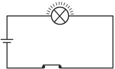
Figure fig_ch03_p055_02 (Page 55)
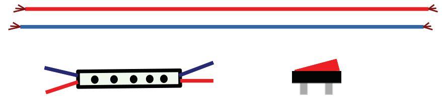
Figure fig_ch03_p055_03 (Page 55)
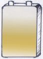
Figure fig_ch03_p055_04 (Page 55)
തന്നിരിക്കുന്ന സെർക്കീട്ടുകൾ ശ്രദ്ധിക്കൂ. ഇവയിൽ A, B, C, D എന്നിങ്ങനെ അടയാളപ്പെ
ടുത്തിയ ഭാഗങ്ങൾ ഏതാണ്?
A
A
B
D
C
D
B
C
സെർക്കീട്ട് 2
സെർക്കീട്ട് 1
സെർക്കീട്ട് 1 A ........................
B ........................ C ........................ D ........................
സെർക്കീട്ട് 2 A ........................
B ........................ C ........................ D ........................
രണ്ട് സെർക്കീട്ടുകളും തമ്മിൽ എന്തെല്ലാം വ്യത്യയാസങ്ങളുണ്ട്?
നിങ്ങൾ നേരത്തെ നിർമ്മിച്ച സെർക്കീട്ടുകൾ ചിഹ്നങ്ങൾ ഉപയോോഗിച്ച് ചിത്രീകരിക്കൂ.
സെർക്കീട്ടിൽനിന്ന് ഉപകരണത്തിലേക്ക്
എമർജൻസി ലാമ്പ് നിർമ്മിക്കാൻ നമുക്ക് 9 V ബാറ്ററിയും LED മൊൊഡ്യയൂളും ഉപയോോഗി
ക്കാം. ഇവ ഉപയോോഗിച്ച് എങ്ങനെയാണ് സെർക്കീട്ട് ക്രമീകരിക്കുന്നത്? ഏതെല്ലാം ഉപക
രണങ്ങൾ തമ്മിൽ ബന്ധിപ്പിക്കണം? വരച്ചുനോോക്കൂ.
വയർ
LED മൊൊഡ്യയൂൾ
സ്വവിച്ച്
ബാറ്ററി
സെർക്കീട്ട് ക്രമീകരിച്ച് LED പ്രകാശിക്കുന്നുണ്ടടോ എന്ന് പരിശോോധിക്കൂ.
ഇനി നമുക്ക് ഒരു സ്റ്റാൻഡ് കൂടി ആവശ്യമുണ്ട്. സ്റ്റാൻഡ് നിർമ്മിക്കുന്നതിനുള്ള എളുപ്പവ
ഴിയാണ് ചിത്രങ്ങളിൽ (1, 2, 3, 4) സൂചിപ്പിച്ചിരിക്കുന്നത്. അവ പരിശോോധിച്ച് എന്തെല്ലാം
വസ്തുക്കളാണ് ഉപയോോഗിച്ചിട്ടുള്ളത് എന്ന് കണ്ടെത്തൂ.
സ്റ്റാൻഡിന്റെ നിർമ്മാണരീതി
ചിത്രം 1 ൽ കാണിച്ചിരിക്കുന്നതുപോോലെ വാവട്ടമുള്ള അര ലിറ്റർ പ്ലാസ്റ്റിക് കുപ്പി എടു
ക്കുക. കുപ്പിയിൽ മണൽ നിറയ്ക്കുക. അടപ്പിൽ ചിത്രം 2-ൽ കാണിച്ചിരിക്കുന്നതുപോോലെ
രണ്ട് സുഷിരങ്ങൾ ഉണ്ടാക്കുക. ചിത്രം 3-ൽ കാണുന്നപോോലെ പൈപ്പിലും സുഷിരങ്ങൾ
ഉണ്ടാക്കുക. അടപ്പിലെ സുഷിരത്തിൽ PVC പൈപ്പ് വച്ചശേഷം ചിത്രം 4 - നോോക്കി സെർ
ക്കീട്ട് ക്രമീകരിക്കുക.
55
എല്ലാ ഭാഗത്തേക്കും വെളിച്ചം ലഭിക്കാൻ ഒന്നിലധികം LED മൊൊഡ്യയൂ
ളുകൾ ഉപയോോഗിക്കാം. എമർജൻസി ലാമ്പ് ഭംഗിയാക്കാൻ വിവിധ
നിറങ്ങളിലുള്ള ഇൻസുലേഷൻ ടേപ്പ് ഉപയോോഗിക്കാം. ഓരോോ ഗ്രൂപ്പും
നിർമ്മിച്ച എമർജൻസി ലാമ്പ് ക്ലാസിൽ പ്രദർശിപ്പിക്കൂ. താഴെ നൽകി
യിരിക്കുന്ന സൂചകങ്ങളുടെ അടിസ്ഥാനത്തിൽ ഏത് ഗ്രൂപ്പ് നിർമ്മിച്ച
താണ് മികച്ചതെന്ന് കണ്ടെത്തൂ.
56
Page 57
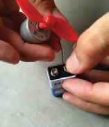
Figure fig_ch03_p057_01 (Page 57)
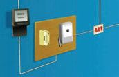
Figure fig_ch03_p057_02 (Page 57)
എന്തെല്ലാം വിലയിരുത്തണം?
●
പ്രവർത്തനക്ഷമത
●
ഭംഗി
●
ഈട്/ഉറപ്പ്
●
ഗാർഹികവൈദ്യയുതി
എമർജൻസി ലാമ്പ് നിർമ്മിക്കാൻ 9 V ബാറ്ററിയാണല്ലലോ
നമ്മൾ ഉപയോോഗിച്ചത്. ബാറ്ററിയുമായി ബന്ധിപ്പിച്ച വയർ
സ്പർശിച്ചുപോോയാൽ ഷോോക്കേൽക്കുമോോ?
എന്നാൽ വീട്ടിൽ ഉപയോോഗിക്കുന്ന വൈദ്യയുതി ഏതെങ്കിലും
വിധത്തിൽ ശരീരത്തിലൂടെ കടന്നുപോോയാൽ ഷോോക്കടിക്കു
മല്ലലോ. എന്താണ് കാരണം? 230 V വൈദ്യയുതിയാണ് വീട്ടിൽ
എത്തുന്നത്. പരീക്ഷണങ്ങൾ ചെയ്യുമ്പപോൾ ശക്തികൂടിയ
വൈദ്യയുതി ഉപയോോഗിക്കുന്നത് സുരക്ഷിതമല്ല.
വൈദ്യയുതഷോോക്ക്
ശരീരത്തിലൂടെ വൈദ്യയുതി പ്രവഹിക്കുമ്പപോൾ ഷോോക്കേൽക്കുന്നു. ജീവനുള്ള കോോശങ്ങ
ളിൽ വെള്ളത്തിന്റെ സാന്നിധ്യമുള്ളതിനാൽ ശരീരം വൈദ്യയുതചാലകമാണ്. പൊൊട്ടിയ
വൈദ്യയുതിലൈനോോ ഇൻസുലേഷൻ ഇല്ലാത്ത സെർക്കീട്ടുപോോലുള്ള ഒരു ബാഹ്യ
വൈദ്യയുതസ്രരോതസ്സസോ ശരീരവുമായി സമ്പർക്കത്തിലെത്തുമ്പപോൾ, വൈദ്യയുതാഘാ
തം സംഭവിക്കുന്നു. ഇത് ചില സമയങ്ങളിൽ ഗുരുതരമായ പൊൊള്ളലേല്പിക്കുന്നു. വൈ
ദ്യയുതാഘാതം മൂലമുണ്ടാകുന്ന മരണത്തിന്റെ പ്രധാനകാരണം ഹൃദയാഘാതമാണ്.
തന്നിരിക്കുന്ന സന്ദർഭങ്ങൾ ശ്രദ്ധിക്കൂ. ഷോോക്കേൽക്കാനിടയുള്ള സാഹചര്യങ്ങൾ കണ്ടെ
ത്തി അതതു കോോളങ്ങളിൽ ടിക്ക് () അടയാളം ചേർക്കൂ.
ഗുണനിലവാരമുള്ള ഉപകരണ
ങ്ങൾ ഉപയോോഗിക്കുന്നു.
സ്വവിച്ച് ഓണായിരിക്കുമ്പപോൾ
ബൾബ് മാറ്റുന്നു.
നനഞ്ഞ കൈകൊൊണ്ട് സ്വവിച്ച്
ഓൺ ചെയ്യുന്നു.
മെയിൻ സ്വവിച്ച് ഓഫ് ചെയ്തശേ
ഷം ഫാൻ അഴിച്ചെടുക്കുന്നു.
സ്വവിച്ച് ഓഫാക്കാതെ പ്ലഗ്പിൻ
ഊരുന്നു.
ഇൻസുലേഷൻ പോോയ വയറുകൾ
ഉപയോോഗിക്കുന്നു.
സ്വവിച്ച് ഓൺ ചെയ്ത് ഉപകരണ
ങ്ങൾ റിപ്പയർ ചെയ്യുന്നു.
വസ്ത്രങ്ങൾ അയൺ ചെയ്യുമ്പപോൾ
ചെരുപ്പ് ഉപയോോഗിക്കുന്നു.
57
Page 58
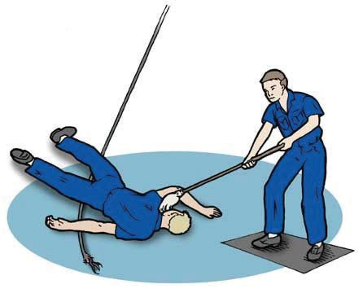
Figure fig_ch03_p058_01 (Page 58)
അടിസ്ഥാനശാസ്ത്രം
ഷോോക്കേൽക്കാൻ സാധ്യതയുള്ള സന്ദർഭങ്ങൾ കണ്ടെത്തിയില്ലേ. നിങ്ങളുടെ വീട്ടിൽ ആർ
ക്കെങ്കിലും അപകടരമായി ഷോോക്കേറ്റ അനുഭവം ഉണ്ടടോ? ഉണ്ടെങ്കിൽ ഏത് സന്ദർഭത്തി
ലാണ് അങ്ങനെ സംഭവിച്ചത്? ക്ലാസിൽ പങ്കുവെക്കൂ.
വൈദ്യയുതോോപകരണങ്ങൾ കൈകാര്യയം ചെയ്യുമ്പപോൾ എന്തെല്ലാം ശ്രദ്ധിക്കണം? ശാസ്ത്ര
പുസ്തകത്തിൽ എഴുതു.
അധികവായനയ്ക്ക്
മിന്നലും വൈദ്യയുതിയും
മഴക്കാലത്ത് അന്തരീക്ഷത്തിൽ കാണുന്ന മിന്നൽ ശ്രദ്ധിച്ചിട്ടില്ലേ. മേഘങ്ങളിൽ
വളരെ ഉയർന്ന അളവിൽ വൈദ്യയുതചാർജ് ഉണ്ടാകാറുണ്ട്. മേഘങ്ങളിലെ ചാർജ്
അടുത്തുള്ള മേഘങ്ങളിലേക്കകോ ഭൂമിയിലേക്കകോ കൈമാറ്റം ചെയ്യുന്നതാണ് മിന്നലിന്
കാരണം. ഇടിമിന്നൽ അതിശക്തമായ വൈദ്യയുതപ്രവാഹമായതിനാലാണ് മിന്നലേറ്റ്
അപകടങ്ങൾ ഉണ്ടാകുന്നത്.
ഷോോക്കേറ്റാൽ
ഷോോക്കേറ്റുകിടക്കുന്ന ഒരാളെ പിടിച്ചുമാ
റ്റാൻ ശ്രമിച്ചാൽ എന്താണ് സംഭവിക്കുക?
നമുക്കും ഷോോക്കേൽക്കില്ലേ. അതിനാൽ
ഒരു കാരണവശാലും ഷോോക്കേറ്റുകിടക്കു
ന്ന വ്യക്തിയെ സ്പർശിക്കാൻ പാടില്ല.
ഷോോക്കേറ്റുകിടക്കുന്ന വ്യക്തിയെ രക്ഷി
ക്കാൻ നാം ഉടനടി ചെയ്യേണ്ടത് എന്തെ
ല്ലാം?
●
●
●
●
വൈദ്യയുതബന്ധം
ഒഴിവാക്കുകയാ
ണ് ആദ്യയം ചെയ്യേണ്ടത്. ഇതിനായി
സ്വവിച്ച് ഓഫ് ചെയ്യുകയോോ ഫ്യയൂസ് ഊരിമാറ്റുകയോോ ചെയ്യാം. ഇത് സാധ്യമല്ലാത്ത
സന്ദർഭത്തിൽ ഉണങ്ങിയ മരക്കമ്പപോ ചാലകമല്ലാത്ത മറ്റേതെങ്കിലും വസ്തുക്കളോോ ഉപ
യോോഗിച്ച് ഷോോക്കേറ്റയാളെ സെർക്കീട്ടിൽനിന്ന് തള്ളിമാറ്റണം.
ഹൃദയമിടിപ്പ് നിലച്ചിട്ടുണ്ടെങ്കിൽ ഷോോക്കേറ്റയാളുടെ നെഞ്ചിൽ കൈകൾ മേൽക്കുമേൽ
വച്ച് തുടർച്ചയായി അമർത്തുക. ഹൃദയം പ്രവർത്തിക്കുന്നതുവരെ ഇത് ചെയ്യണം.
സ്വയം ശ്വസിക്കാൻ കഴിയുന്നില്ലെങ്കിൽ കൃത്രിമശ്വവാസം നൽകണം. ശരീരം തിരുമ്മി
ചൂടാക്കണം.
ഷോോക്ക് ഗുരുതരമാണെങ്കിൽ ഷോോക്കേറ്റ വ്യക്തിയെ ഉടനെ ആശുപത്രിയിലെത്തിക്കണം.
58
Page 59
Figure fig_ch03_p059_01 (Page 59)
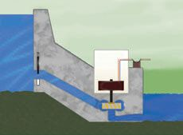
Figure fig_ch03_p059_02 (Page 59)
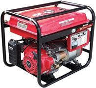
Figure fig_ch03_p059_03 (Page 59)
ജനറേറ്റർ
മേളകളോോ പി.ടി.എ പൊൊതുയോോഗങ്ങളോോ നടക്കു
മ്പപോൾ സ്കൂളിൽ ജനറേറ്റർ കൊൊണ്ടുവരാറില്ലേ. എന്തി
നാണ് ജനറേറ്റർ കൊൊണ്ടുവരുന്നത്?
ജനറേറ്റർ പ്രവർത്തിപ്പിക്കാൻ ഏത് ഇന്ധനമാണ് ഉപ
യോോഗിക്കുന്നത്?
പെട്രരോൾ, ഡീസൽ, മണ്ണെണ്ണ തുടങ്ങിയ ഇന്ധനങ്ങ
ളിൽനിന്നുള്ള ഊർജം ഉപയോോഗിച്ചാണ് ജനറേറ്റർ
ജനറേറ്റർ
പ്രവർത്തിച്ച് വൈദ്യയുതി ഉണ്ടാകുന്നത്. ജനറേറ്ററിൽ
രാസോോർജം ആദ്യയം യാന്ത്രികോോർജമായും പിന്നീട്
വൈദ്യയുതോോർജമായും മാറുന്നുവെന്ന് നിങ്ങൾ മുൻക്ലാസിൽ മനസ്സിലാക്കിയിട്ടുണ്ടല്ലലോ.
സ്കൂളിലും വീടുകളിലുമൊൊക്കെ വൈദ്യയുതി ലഭിക്കാൻ സ്ഥിരമായി ജനറേറ്റർ ഉപയോോ
ഗിക്കാൻ കഴിയുമോോ? ഡീസലിന്റെ വില, മലിനീകരണം തുടങ്ങിയവയുടെ അടിസ്ഥാന
ത്തിൽ ചർച്ചചെയ്യൂ. എന്താണ് പരിഹാരം?
ജലവൈദ്യയുത നിലയം
ഉയരമുള്ള പോോളുകളിലൂടെ വലിച്ചുകെട്ടിയ കമ്പികൾ കണ്ടിട്ടില്ലേ. എവിടെനിന്നാണ്
ഈ കമ്പികൾ വൈദ്യയുതി കൊൊണ്ടുവരുന്നത്? എങ്ങനെയാണ് ഈ വൈദ്യയുതി ഉല്പാദിപ്പി
ക്കുന്നത്?
ജലവൈദ്യയുതനിലയങ്ങളിലെ വലിയ ജനറേറ്ററുകൾ പ്രവർത്തിപ്പിച്ച് ഉൽപാദിപ്പിക്കുന്ന
വൈദ്യയുതിയാണ് നാം പ്രധാനമായും വീടുകളിൽ ഉപയോോഗിക്കുന്നത്.
ജലവൈദ്യയുതനിലയങ്ങളിലെ ജനറേറ്ററുകൾ പ്രവർത്തിക്കുന്നത് എങ്ങനെയാണ്?
അണകെട്ടി ഉയരത്തിൽ നിർത്തിയ വെള്ളം താഴേക്ക് പതിക്കുമ്പപോഴുണ്ടാവുന്ന ഊർജം
ഉപയോോഗിച്ചാണ് ജലവൈദ്യയുതനിലയങ്ങളിൽ ജനറേറ്റർ പ്രവർത്തിപ്പിക്കുന്നത്. വെള്ളം
പൈപ്പിലൂടെ കൊൊണ്ടുവന്ന് ജനറേറ്ററുമായി ബന്ധിപ്പിച്ച ടർബൈനിലേക്ക് വീഴ്ത്തതുന്നു.
ടർബൈൻ തിരിയുന്നു. ജനറേറ്റർ പ്രവർത്തിച്ച് വൈദ്യയുതി ഉണ്ടാകുന്നു. ഈ വൈദ്യയുതി
ഇലക്ട്രിക് ലൈനുകളിലൂടെ വിവിധ സ്ഥലങ്ങളിൽ എത്തിക്കുന്നു.
കേരളത്തിൽ ലഭിക്കുന്ന വൈദ്യയുതിയുടെ ഭൂരിഭാഗവും ഉൽപാദിപ്പിക്കുന്നത് ഇടുക്കിയി
ലെ ജലവൈദ്യയുത നിലയത്തിലാണ്. ഇന്ധനങ്ങളുടെ വില, മലിനീകരണം തുടങ്ങിയവയു
ടെ അടിസ്ഥാനത്തിൽ ഡീസൽ ജനറേറ്ററുകളെ അപേക്ഷിച്ച് ജലവൈദ്യയുത നിലയങ്ങളു
ടെ മേന്മ ചർച്ചചെയ്യൂ.
വൈദ്യയുതി ഉൽപാദനത്തിനുള്ള മറ്റ് സാധ്യതകൾ
താപവൈദ്യയുത നിലയം
ആണവോോർജനിലയം
കാറ്റാടിപ്പാടം
ഈ ചിത്രങ്ങൾ നിരീക്ഷിക്കൂ. കൽക്കരി, ഡീസൽ എന്നീ ഇന്ധനങ്ങൾ ഉപയോോഗിച്ചും കാ
റ്റിന്റെയും തിരമാലയുടെയും ശക്തിയുപയോോഗിച്ചും ആണവോോർജം ഉപയോോഗിച്ചും വി
വിധരീതിയിൽ നമ്മുടെ രാജ്യത്ത് വൈദ്യയുതി ഉൽപാദിപ്പിക്കുന്നുണ്ടെന്ന് നിങ്ങൾ മുമ്പ്
മനസ്സിലാക്കിയിട്ടുണ്ടല്ലലോ.
താഴെക്കകൊടുത്തിരിക്കുന്ന ചിത്രങ്ങൾ ശ്രദ്ധിക്കൂ.
സോോളാർ പാനൽ
ചന്ദ്രയാൻ 3 സോോളാർ കാർ
സൂര്യനിൽനിന്നുള്ള ഊർജം വൈദ്യയുതോോർജമാക്കി മാറ്റുന്നതിനുള്ള സംവിധാ
നമാണ് സോോളാർ സെല്ലുകൾ. ഒന്നിലധികം സോോളാർസെല്ലുകൾ ചേർന്നതാണ്
സോോളാർപാനൽ. ഭാവിയിൽ വരാവുന്ന ഊർജപ്രതിസന്ധിക്കുള്ള പരിഹാരമാണ്
സൗരോോർജം. ചെലവുകുറഞ്ഞ രീതിയിൽ സൗരോോർജം പ്രയോോജനപ്പെടുത്താനുള്ള
സാങ്കേതികവിദ്യകൾ വികസിച്ചുവരേണ്ടതുണ്ട്. ഇതിനായുള്ള ഗവേ
ഷണപ്രവർത്തനങ്ങൾ നടന്നുവരുന്നു.
വൈദ്യയുതി പാഴാക്കല്ലേ
കൂടുതലായി വൈദ്യയുതി ഉപയോോഗിക്കുമ്പപോൾ കൂടുതൽ
വൈദ്യയുതി ഉൽപാദിപ്പിക്കേണ്ടിവരും. കൂടുതൽ വൈദ്യയുതി ഉൽ
പാദിപ്പിക്കാൻ കൂടുതൽ ഇന്ധനം ഉപയോോഗിക്കേണ്ടിവരില്ലേ. ഈ
പോോസ്റ്റർ ശ്രദ്ധിക്കൂ.
60
Page 61
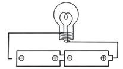
Figure fig_ch03_p061_01 (Page 61)
എന്ത് സന്ദേശമാണ് ഈ പോോസ്റ്റർ നൽകുന്നത്? വൈദ്യയുതി പാഴാക്കുന്ന സന്ദർഭങ്ങൾ
ഏതെല്ലാം? ചർച്ച ചെയ്യൂ. ആരും ഉപയോോഗിക്കാനില്ലാത്തപ്പപോഴും നിങ്ങളുടെ ക്ലാസ്സിൽ
ഫാൻ, ബൾബ് ഇവയുടെ സ്വവിച്ചുകൾ ഓണായിക്കിടക്കാറുണ്ടടോ?
വൈദ്യയുതി പാഴാകാതിരിക്കുന്നതിനും ആവശ്യത്തിന് മാത്രം ഉപയോോഗിക്കുന്നതിനും നാം
ശ്രദ്ധിക്കേണ്ട വസ്തുതകൾ ഉൾപ്പെടുത്തി ഒരു പോോസ്റ്റർ നിർമ്മിച്ച് ക്ലാസ്സിൽ പ്രദർശിപ്പിക്കൂ.
വിലയിരുത്താം
1. ബാറ്ററി ഉപയോോഗിച്ച് എമർജൻസി ലാമ്പ് പ്രകാശിപ്പിക്കുമ്പപോൾ നടക്കുന്ന ഊർജ
മാറ്റം എന്ത്?
a. വൈദ്യയുതോോർജം പ്രകാശോോർജമാകുന്നു.
b. പ്രകാശോോർജം രാസോോർജമാകുന്നു.
c. രാസോോർജം ആദ്യയം വൈദ്യയുതോോർജവും പിന്നീട് പ്രകാശോോർജവുമാകുന്നു.
d. രാസോോർജം വൈദ്യയുതോോർജമാകുന്നു.
2. തന്നിരിക്കുന്നതിൽ ഏതാണ് തുറന്ന സെർക്കീട്ട്?
a. ഫാൻ കറങ്ങുന്നു.
b. കേടായ ബെല്ലിന്റെ സ്വവിച്ച് ഓൺ ചെയ്യുന്നു.
c. മിക്സി പ്രവർത്തിക്കുന്നു.
d. ബൾബ് പ്രകാശിക്കുന്നു
3. കൃത്രിമ ഉപഗ്രഹങ്ങൾ പ്രവർത്തിക്കുന്നതിനുള്ള വൈദ്യയുതി ലഭിക്കുന്നത് എവിടെ
നിന്നാണ്?
a. സോോളാർപാനൽ
b. ഡീസൽ
c. പെട്രരോൾ
d. കൽക്കരി
4. കേരളത്തിൽ വേനൽക്കാലത്ത് ചിലപ്പപോൾ വൈദ്യയുതിക്ഷാമം ഉണ്ടാകാറുണ്ട്.
എന്തുകൊൊണ്ട്?
5. ജലാശയത്തിലേക്ക് വൈദ്യയുതക്കമ്പി പൊൊട്ടിവീ
ഴുമ്പപോൾ വെള്ളത്തിൽ നിൽക്കുന്നവർക്ക് ഷോോ
ക്കേൽക്കാൻ സാധ്യതയുണ്ടടോ? എന്തുകൊൊണ്ട്?
6. തുറന്ന സെർക്കീട്ടിന്റെ ചിത്രം നിരീക്ഷിക്കൂ.
ഇതിനെ അടഞ്ഞ സെർക്കീട്ടാക്കി മാറ്റി ചിഹ്ന
ങ്ങൾ ഉപയോോഗിച്ച് ചിത്രീകരിക്കൂ.
തുടർപ്രവർത്തനങ്ങൾ
1. വിവിധ ഉപകരണങ്ങളും ബാറ്ററിയും ഉപയോോഗിച്ച് വൈദ്യയുത സെർക്കീട്ടുകൾ
നിർമ്മിക്കൂ.
2. ജലവൈദ്യയുത നിലയത്തിന്റെ മാതൃക നിർമ്മിച്ച് പ്രവർത്തനം വിശദീകരിക്കൂ.
61